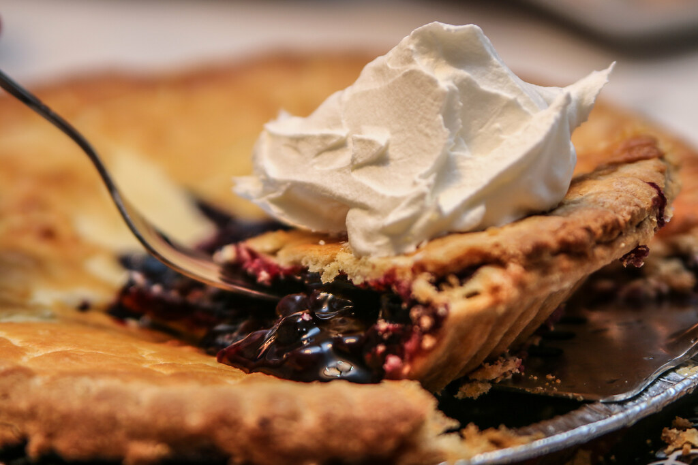

Blueberry Pie

Description
A flaky delight to warm your insides.
Fresh or frozen blueberries in a buttery, flaky crust, and topped with whipped cream.
Ingredients
- 1 3/4 cups flour
- 1/2 cup olive oil
- 3 tbsp. cold water
- blueberry filling (see recipe)
- whipped cream
Steps
- Preheat the oven to 425 degrees F (218 degrees C).
- In a medium-large bowl, blend oil thoroughly into flour with fork.
- Add water 1 tablespoon at a time, and again mix very well. If too dry, add 1 or 2 tbsp more oil.
- Press the dough firmly into a ball, and roll out between wax paper.
- Unpeel wax paper, placing crust in pie pan.
- Pinch edges and bake until golden brown (about 20-25 minutes).
- When crust has cooled, pour in blueberry filling. Dot with circles of whipped topping.